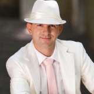
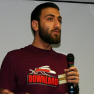
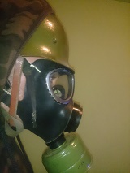

СВЕТЛИН НАКОВ
Светлин Наков има над 15-годишен опит като софтуерен инженер,
мениджър на софтуерни проекти, консултант, лектор и предприемач с богат опит в .NET and Java EE platforms,
информационни системи, бази данни, уеб разработка и софтуерно инженерство.
Той е автор на 7 книги за компютърно програмиране и софтуерни технологии, C# и Java, както и на десетки технически и
научни публикации. Светлин е бил гост-лектор на стотици конференции, семинари, курсове и други обучения.
Той има докторска степен в областта на компютърните науки, както и медали от Международни олимпиади по Информатика (МОИ).
Светлин е носител на Наградата на Президента на Република България “Джон Атанасов”.
Той също така има опит като хоноруван преподавател по компютърни науки в СУ “Св. Климент Охридски”, НБУ и ТУ София.
Светлин Наков е участвал като главна движеща сила за създаването и изграждането на най-големия обучителен център за софтуерни
инженери в България - Софтуерната академия на Телерик. Там той е преподавал на хиляди млади хора в области като компютърни науки,
софтуер разработка и информационни технологии.
Ако се чудите защо това по- скоро прилича на съчинение на ученик в
6- ти клас, отколкото на резюме на нобелов лаурат за мир, отговора е ясен- никой не трябва да се е*ава с Наков!

АНГЕЛ ГЕОРГИЕВ
Това е той! Ангел Георгиев, Джава(Жава) нинджата на нашата малка(но силна) частна армия. Не се заблуждавайте по това
усмихнато и приветливо лице, Ангел е един безупречен войн, който може едновременно да пише новото Call Of Duty,
да обяснява защо Дубайския шилинг е най- перспективната валута в света, да обучава малки деца да смятат в БАЙнъри на ум,
като през това време разтрива знойна девойка с палмово масло на топъл тропически остров! Това е той! Въпреки многоти си предишни
мисии, той остава много земе, човек може да го засече чилвайки на кафе по софийските улици, като в следващия момент е способен
да води смъртоносни битки с Кан Академията и нейните съюзници. Все пак, най- уважаван е заради страхотните си качества
да вербува нови войни, още от крехка детска възраст. Наскоро, дори толкова добре се справи, че успя да накара родителтие
на младите войници да платят за да се срещнат с него! Гениално! Това е той! Автора на това досие познава Ангел от неговите изяви
като млад старшина в областа на Жава, където както всичко останало, много му се отдава. С три думи- ТОВА Е ТОЙ!

Мариян Маринов
Мариян Маринов се занимава със системна администрация от 1998 г. насам. В момента е Управител и главен архитект
на 1H Ltd.:http://www.1h.com. Там прави софтуер за web hosting фирми, използвайки най-новите технологии в Linux,
като от време на време, де факто създава някои от тези нови технологии. В свободното си време помага
за организирането на OpenFest, BG Perl Workshops, YAPC::Europe, FOSDEM и други конференции насочени към софтуерът
с отворен код. Той е редовен лектор на подобни конференции в цял свят. Когато не е по конференции, обича да споделя
своите знания, като прави курсове по Linux System Administration и Network Security във Факултета по Математика и Информатика
към Софийски Университет.

Марио Пешев
Марио Пешев е WordPress консултант и технически ръководител в DevriX. Занимава се със софтуерна разработка на различни платформи и води обучения
по програмиране от 2006-та година насам. Марио е сертифициран Java програмист, но има солиден опит и с PHP и Python, както и с други скриптови езици.
В последно време се изявява активно по WordPress събития по света и в България, като сред обученията му през последните години са и тренинги в CERN,
Швейцария, както и Saudi Aramco в Саудитска Арабия.
Търсете Каската.

КАСКАТА
Не може да съществува военен проект без един истински, войн! Въпреки, че опита му не може да се сравнява с този на горните двамата,
той направи първи крачки във обучението на кадри. Справи се добре въпреки, че обеща бира, такава нямаше, а накрая накара
всички присъстващи да му купят бира. Изчезна за 3 дни. Беше забелязан отново на обичайните си патрулни райони в Младост
и Студентски град. Много от вас биха се запитали, защо кодовото му название е Каската? Това, заедно с мистерията за големия взрив
са двете неразкрити загадки във Вселената. Ако искате да се свържете с него, може да го потърсите по бойните полета на WoW.
Търсете Каската.